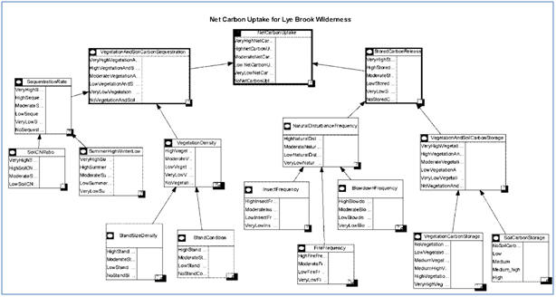

Case Study: Green Mountain National Forest, Vermont
At a glance
Primary Partner: University of Vermont
Primary Researcher:
Jennifer Wright
Completed: May 2010
Models: Carbon Sequestration
Lessons Learned: After
introducing this model to Sandy Wilmot, Vermont Department
Forests, Parks and Recreation and Bill Keeton, UVM, several
important issues were noted and should be addressed. First,
the node indicating Natural disturbance frequency could be
replaced by Disturbance frequency since non-native invasive
pests are currently the most frequent cause of insect
damage. Secondly, Bill Keeton does not deemed soil C:N ratio
appropriate for the northeastern forest carbon model net
carbon uptake. This would be explained by the specificity of
nitrogen soil limitation in the Pacific Northwest area and
its relation to red alder and Douglas fir forest succession
stages. In the northeast US, soils are
apparently limited by other nutrients such as calcium and
possibly phosphorous. Further investigation is needed to
determine how limited nutrients interact with their
environment. In consequence, other factors might need to be
included in the sequestration rate intermediate variable and
the summer high-winter low variable should be reassessed.
Lastly, Sandy Wilmot noted the importance of land
cover change especially permanent forest removal on net
carbon uptake. If this model is to be used for Vermont
forests, land use cover might need to be introduced in the
model.
Practical application
Modeling net carbon uptake for a
wilderness simplifies the process since no forest management
activity is considered. However, many forested areas must
include forest management activities complicating the
calculation of carbon uptake.

The Lye Brook Wilderness is within the Green Mountain
National Forest in Vermont. It received its designation in 1975.
It encompasses 17 841 acres and is located east of Manchester.
It is managed by the Forest Service. It sits between 900 feet
and 2900 feet above sea level. The Appalachian and Long Trails
traverse 4.5 miles of the northwest tip of the wilderness. The
forest is predominantly composed of northern hardwood. The area
was once logged, leaving remnants of railroad grades and old
logging roads on the landscape. Currently, visitors hunt,
snowshoe, cross-country ski and hike in the area.
The Forest Service Wilderness program is investigating the contribution of ecosystem services to climate change mitigation. The use of ARIES can assist in demonstrating carbon storage and uptake by the wilderness area. This carbon model was developed to represent forests of northern New England.
StepsThe net carbon uptake concept map provided
in this report is based on the existing carbon uptake concept
map developed by Kenneth Bagstad for the Puget Sound in
Washington state and Madagascar. In addition, Samuel Gorton, UVM
fellow student working on a Vermont agricultural land net carbon
uptake model development was consulted.
As in the original carbon sequestration and
storage model, the net carbon uptake is the difference between
vegetation and soil sequestration and stored carbon release. The
vegetation and soil carbon sequestration is dependent on
sequestration rate and vegetation density.
The soil C:N ratio and the difference
between mean summer high and winter low temperatures (Auch 2009)
are the variables influencing sequestration rate. Vegetation
density is a function of stand size density and stand condition.
These two variables come from the Forest Service Common Stand
Exam. The stand size density is a combination of tree diameter
and stocking level. As so, successional stage and tree
productivity are considered in this variable. The stand
condition is another variable including both stocking and
successional stage. Stand size density and stand condition are
based on visual inspection (personal communication Burbank,
2010). Stored carbon release is function of natural disturbance frequency and vegetation and soil carbon storage. Natural disturbance frequency is based on insect infestation, blowdown and fire frequency (Lorimer and White 2003). Vegetation and soil carbon storage are determined by data provided by the Vermont Department Forests, Parks and Recreation.  ReferencesAuch, W. (2009). PhD Dissertation. Modeling the interaction between climate, chemistry, and ecosystem fluxes at the global scale . Vermont, Burlington: The University of Vermont. Craig G. Lorimer, A. W. (2003). Scale and frequency of natural disturbancy in the northeastern US: implications for early successional forest habitats and regional age distribution. Forest Ecology and Management , 41-64. Jared S. Nunery, W. S. (2010). Forest sarbon storage in the northeastern United States: Net effects of harvesting frequency, post-harvest retention, and wood products . Forest Ecology and Management , 1363-1375. Martin E. Dale, D. E. (s.d.). Central Hardwood Notes. Stocking Chart for Upland Central Hardwoods . Delaware, Ohio: Northeastern Forest Experiment Station, USDA Forest Service. Service, U. F. (s.d.). Common Stand Examen Protocols. |